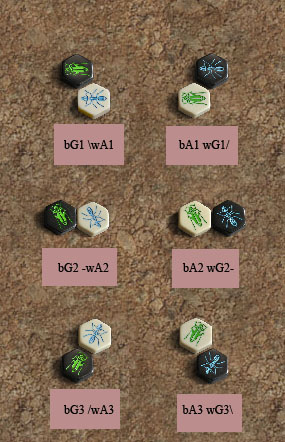

|
Notation des mouvements
- La pièce déplacée est nommée en premier.
Son lieu de départ n'est pas nommé : elle vient d'où
elle était, que se soit un point du plateau ou de la réserve.
- L'une des pièces
à côté desquelles la pièce se retrouve
placée est nommée en second. Souvent, il y a plusieurs
choix. Peu importe la pièce prise alors comme référence.
Si la pièce déplacée est placée à
gauche de la référence, / - ou \ précède
le nom de la pièce de référence selon
la position de leur côté commun. Si la pièce déplacée
est posée à droite de la référence, /
- ou \ suit le nom de la pièce.
- Si le coup est le premier de la partie, ou s'il s'agit d'un coup
du type "Scarabée grimpe sur une pièce", aucune
référence de position n'est indiquée.
|